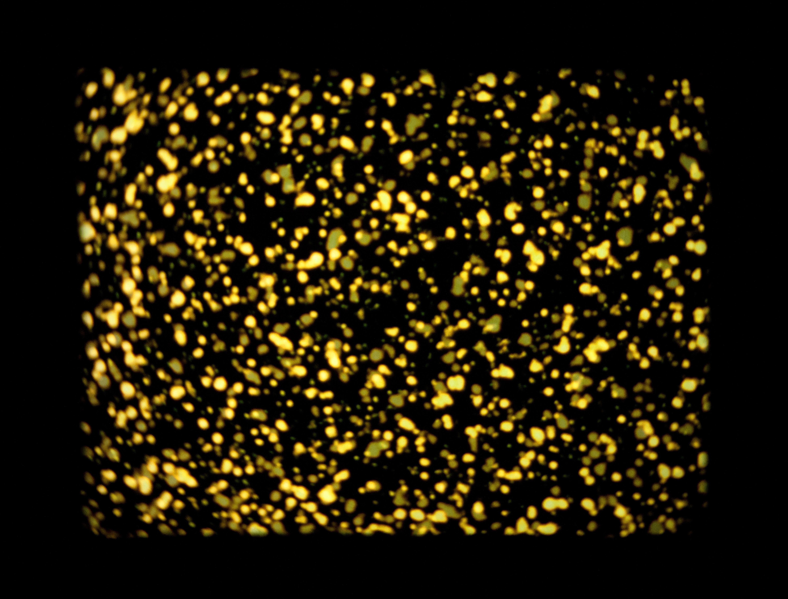

Mio Alter

Welcome! I am a software engineer, geometer, functional programmer, and lover of movies and poodles! I am currently a software engineer at Stripe where I work on machine learning for fraud detection, mostly in Scala.
Before that, I was a data scientist at 6sense where I worked on predictive analytics for sales and marketing.
Before that, I studied Geometry and Topology at UT-Austin and Columbia, and before that, I worked at the infamous Kim's Video among other film-related things.
For current information, see Linkedin.
For math stuff from grad school, step into the way-back machine.